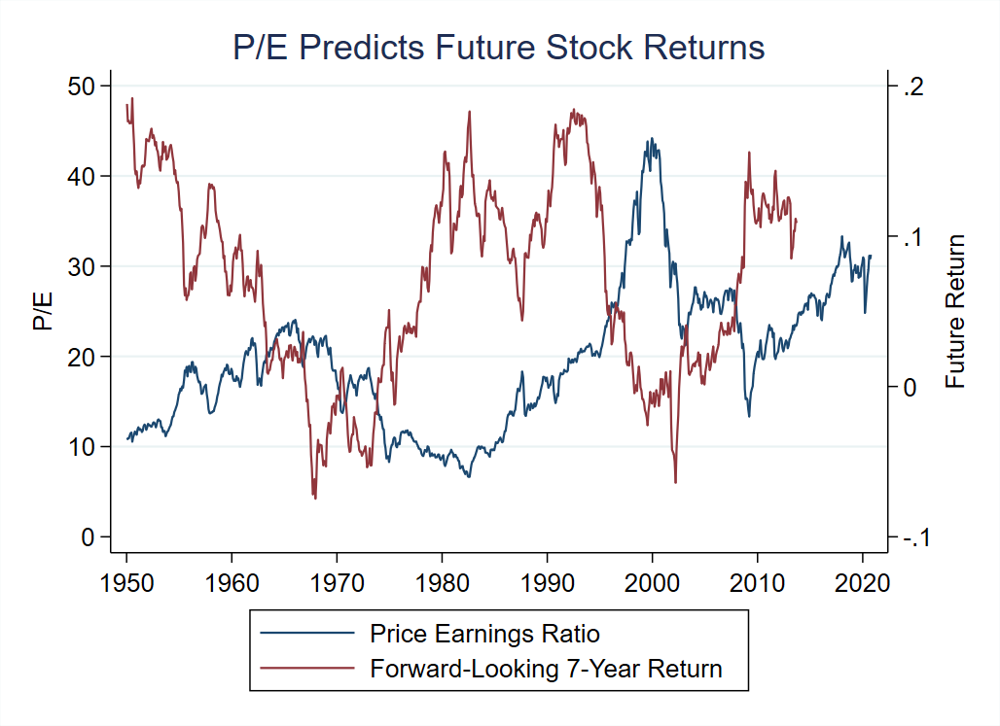

|
November 21, 2020 Is the stock market predictable? The efficient market hypothesis posits that companies' stock prices reflect fundamental values at all time. The implication of market efficiency is that stocks are never over-valued or under-valued and therefore it is never a particularly good time or a particularly bad time to buy stocks. According to the efficient market hypothesis, it is always business as usual. An early challenge to market efficiency came from American economist Robert J. Shiller. Shiller noticed that the stock market is not only volatile, it is also mean reverting. Mean reversion means that, when the stock market is at a high level at a given point in time, it tends to subsequently go down. Conversely, if the stock market is at a low level today, it tends to go up in the future. This fact is illustrated in the figure below, which shows a longer time-series than was available when Shiller crunched the data in the 1980s. The blue line is the average Price-Earnings (P/E) ratio, that is, the ratio of companies' stock market capitalization divided by their annual earnings. A high P/E ratio means that stocks are relatively expensive in the sense that for a given level of earnings stock prices are high. The highest P/E ratio ever reached was at the peak of the Internet bubble at the end of 1999. Conversely, a low P/E ratio means that stock prices are low relative to earnings. For example, the P/E ratio was relatively low in the midst of the 2008 financial crisis. The red line is the stock market return over the following seven years. For instance, the high point around 13% reached at the end of 2008 means that an investment in the stock market at the end of 2008 until the end of 2015 yielded a return of 13% per year. The key pattern that emerges from the data is a robust negative correlation between the P/E ratio and subsequent stock returns. When the P/E ratio is high such as in 1999, future returns tend to be low. When the P/E ratio is low such as in 2008, future returns tend to be high. Statistical tests confirm this negative relation. The correlation between the P/E ratio and the subsequent seven-year return is minus 0.5. When the P/E ratio increases by 2.5 points, stock returns are on average 1% per year lower over the following seven years. This is only on average, yet this represents a fairly strong inverse relation between the P/E ratio and future returns. Shiller's interpretation of stock market predictability is that financial markets go through waves of irrational exuberance, which are predictably followed by market crashes. Conversely, periods of over-pessimism during which stock prices are depressed are predictive of high future returns. According to that interpretaion, the ebbs and flows of market sentiment generate predictability of stock market returns, in contradiction with the efficient market hypothesis. Shiller was awarded the 2013 Nobel Prize in economics for studying these mechanisms. However, stock market predictability is not necessarily in contradiction with efficient markets. To understand the logic of the counter-argument, think of an economic crisis such as the 2008 Great Recession or the Covid crisis. In a recession, the future is very uncertain and people are worried about losing their jobs and their savings, and have perhaps already lost a fraction of their savings in the crisis. As a result, investors become more averse to take additional risks and in particular they become reluctant to hold stocks, unless stocks are really cheap and are expected to yield high returns. According to that interpretation, stock prices are low and future returns are high in a recession, as we observe in the data. We therefore have two different – almost opposite – explanations for why the P/E ratio fluctuates widely over time in a way that is predictive of future market returns. According to the inefficient market interpretation, periods of high stock valuations occur when investors are wrongly optimistic about future economic prospects, leading to predictably low returns. According to the efficient market hypothesis, periods of high stock valuations occur when investors feel rightly confident about future economic prospects and require a low risk premium, leading to predictably low returns. Which interpretation is correct? This is what we will find out in the next post... Data sources: The P/E shown in the above figure is calculated using cyclically-adjusted earnings defined as ten-year moving average earnings. Stock market returns are calculated in real terms, that is, in excess of the rate of inflation. The data are from Shiller's website. |